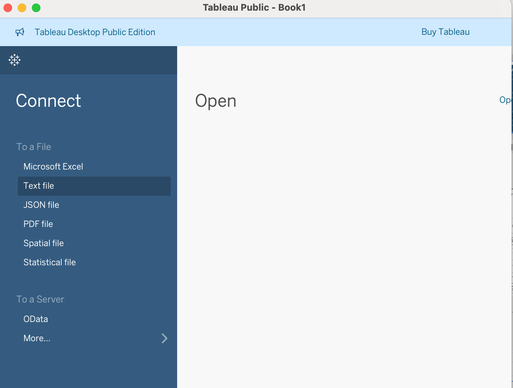
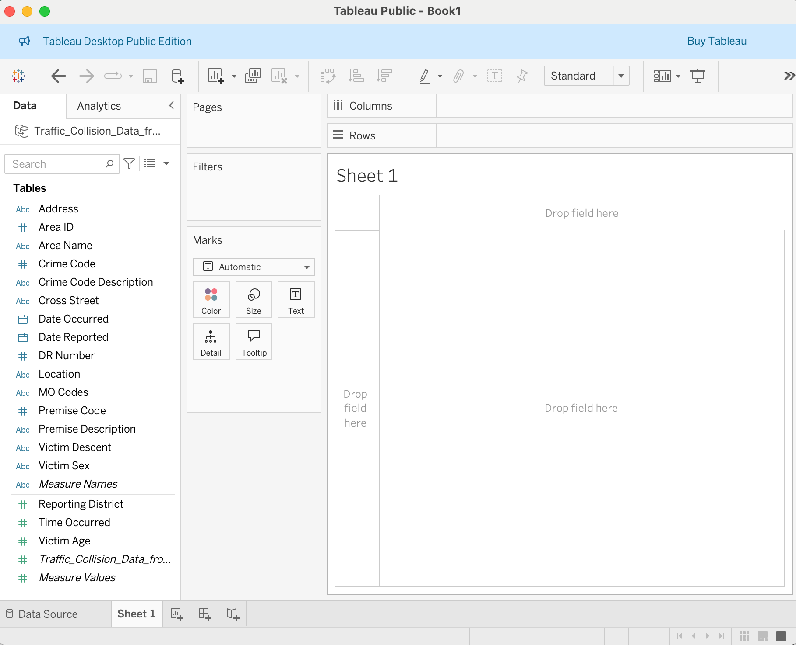
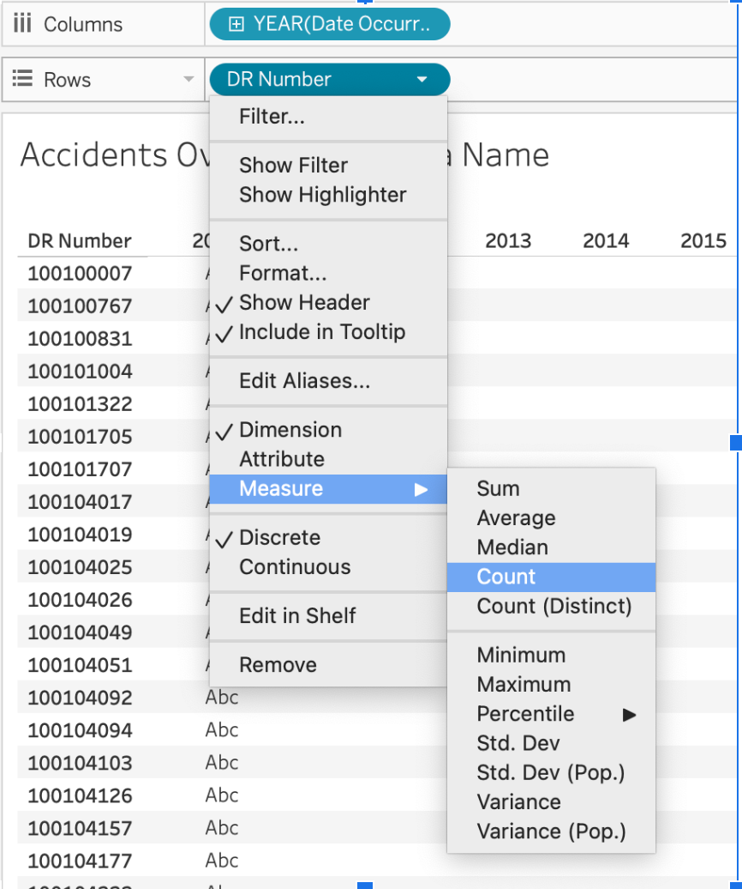
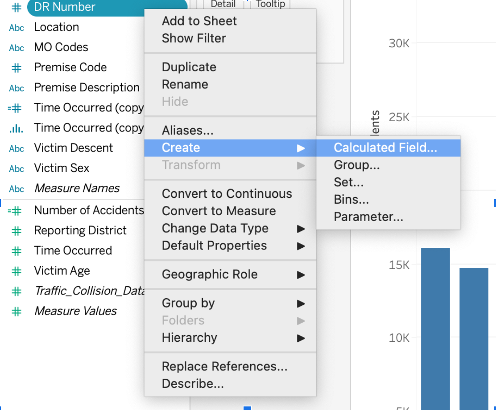
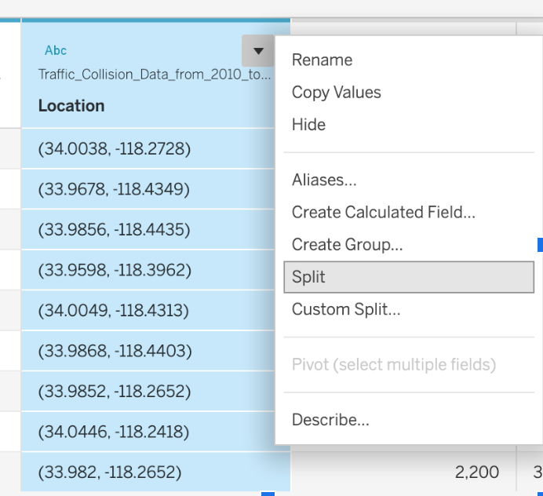
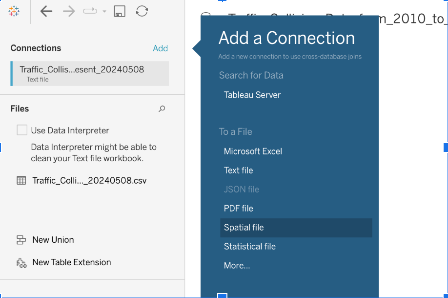

All in One View
Content from Getting Started with Tableau Public
Last updated on 2026-09-10 | Edit this page
Estimated time: 35 minutes
Overview
Questions
- What is Tableau?
- What is Tableau Desktop: Public Edition, and how does it differ from a licensed edition?
- How do I install Tableau Desktop: Public Edition and open a dataset?
- What kinds of data can Tableau help me visualize?
Objectives
- Describe what Tableau is and how Public Edition compares to a licensed edition.
- Install and launch Tableau Desktop: Public Edition.
- Load a sample dataset, save it locally, and become familiar with the interface.
What is Tableau?
Tableau is a data visualization platform that enables users to explore and communicate data effectively through interactive charts, dashboards, and maps. It’s widely used across many fields, including business, public policy, and research.
This workshop uses Tableau Desktop: Public Edition — the installed desktop application, not the web-based authoring tool at public.tableau.com. Menu paths and screenshots in this lesson describe the desktop app.
Tableau Public publishes workbooks to a public website, and the underlying data may be downloadable. Don’t use it with sensitive or restricted data. We’ll come back to this in Episode 5.
Tableau Editions
There are three current editions of Tableau Desktop:
- Tableau Desktop: Public Edition — free, installed application. Saves locally and publishes to Tableau Public. Not licensed for commercial use. This is what we’re using today.
- Tableau Desktop: Free Edition — free, unlimited rows, but cannot publish anywhere (local analysis only). Useful for private, non-shareable data, but out of scope for this workshop.
- Tableau Desktop: Professional Edition — the fully licensed edition, available through paid or institutional licenses. Adds live database connections, unlimited data sources, and publishing to Tableau Cloud or Tableau Server in addition to Tableau Public.
Feature comparison: Public Edition vs. Professional Edition
| Feature | Tableau Desktop: Public Edition | Tableau Desktop: Professional Edition |
|---|---|---|
| Save Locally | Yes | Yes |
| Row limit | 15 million rows | Unlimited |
| Publishing destinations | Tableau Public only | Tableau Public, Tableau Cloud, Tableau Server |
| Data source connections | Limited (CSV, Excel, Google Sheets, JSON, PDF, spatial files, and similar) | Full (databases, cloud services, live connections, and more) |
| Commercial use | Not permitted | Permitted |
Everything in this workshop stays well within the Public Edition’s limits.
Launching Tableau and Connecting to Data
To get started, if Tableau Desktop (or Public) is in your dock, you can click it open. However, a standard method is to navigate to your Applications folder (or wherever you installed it) and launch it from there.
Once Tableau is open:
- Under Connect, click Text File.

- Browse to your downloaded CSV file and select it.
The Data Source page
Before building anything, Tableau shows you the Data Source page — a preview of your connected file. Take a moment to check it over:
- Do the field names match what you expect (
Area Name,Date Occurred,DR Number, and so on)? - Does each row represent one collision record? This matters later when we count accidents.
- Are date fields recognized as dates (a calendar icon next to the field), not plain text?
- Do any columns look like the wrong data type (numbers stored as text, or vice versa)?
Expected outcome: Data Source page
You should see a grid preview of your CSV with column headers along
the top and a data-type icon (Abc, #,
calendar, and so on) above each field name. If a field looks
misclassified — for example, Date Occurred shown as
Abc text instead of a date — you can change its data type
here or later in the Data pane.
- Click Sheet 1 at the bottom to move from the Data Source page into a new worksheet.

Getting oriented in a worksheet
A worksheet is where you build one chart. The view is what actually renders in that worksheet as you add fields. A few parts of the interface you’ll use constantly:
- Data pane — the list of fields (columns) from your connected data, on the left.
- field / pill — each item in the Data pane is a field; when you drag it into the view it becomes a small rounded box called a pill.
- Rows shelf and Columns shelf — drop pills here to define the rows and columns of your view.
- Marks card — controls how each data point is drawn (as a bar, line, circle, map point, and so on) and lets you add fields to Color, Size, Label, Detail, and Tooltip.
We’ll use this vocabulary throughout the rest of the lesson.
Save your work locally
Before you go further, save a local copy of your workbook:
- Go to File > Save As.
- Choose a location and file name (for example,
intro-tableau-workshop.twb). - Click Save.
Expected outcome: saved workbook file
Your workbook now exists as a local .twb (or
.twbx) file on your computer. Tableau Desktop: Public
Edition can save locally like this at any point — you don’t need to be
online or publish anything to save your progress. Get in the habit of
saving periodically as you work.
- Tableau helps you explore and present data using interactive visualizations.
- Tableau Desktop: Public Edition is free, saves locally, and publishes only to Tableau Public — not to Tableau Cloud or Tableau Server.
- A licensed Tableau Desktop: Professional Edition adds unlimited rows, live connections, and more publishing destinations.
- Check the Data Source page before building: field names, row grain, and recognized data types all matter later.
- Use well-formatted CSVs to start quickly.
Content from Understanding Fields and Preparing Data
Last updated on 2026-09-10 | Edit this page
Estimated time: 40 minutes
Overview
Questions
- What is the difference between a field’s data type, its role, and how it’s displayed?
- What do the blue and green pill colors actually mean?
- How do I identify and prepare fields for visualization?
Objectives
- Distinguish data type, field role (dimension/measure), aggregation, and discrete/continuous — four separate concepts Tableau often shows together.
- Explore the Show Me panel to build a selected view from chosen fields.
- Create a calculated field and audit the dataset for data-quality issues.
Four things Tableau is telling you about a field
When you look at a field in the Data pane or as a pill in a view, Tableau is packing four separate pieces of information into how it looks. It’s easy to blur them together, so let’s pull them apart before we build anything:
-
Data type — what kind of value it holds: string,
number, date, Boolean, spatial, and so on. Shown by the small icon next
to the field name (
Abc,#, a calendar, and so on). -
Field role — whether Tableau treats it as a
dimension (a qualitative field used to categorize and
segment, like
Area NameorDR Number) or a measure (a quantitative field meant to be aggregated, likeVictim Age). This is a Tableau-specific classification, not the same as data type — a number can be a dimension, and text can technically be a measure. -
Aggregation — for measures, how values are
summarized when combined:
SUM,AVG,COUNT,COUNTD, and so forth. You’ll see this reflected in a pill’s label, e.g.SUM(Victim Age). - Discrete or continuous — whether the field creates separate header labels (discrete) or a continuous axis (continuous). This is what the pill color actually encodes.
Pro-tip: blue and green mean discrete and continuous — not dimension and measure
This is the single most common point of confusion in Tableau, so it’s worth stating plainly:
- Blue pills are discrete. They create headers — separate labeled categories.
- Green pills are continuous. They create an axis — a continuous scale.
Dimensions are usually blue (discrete) and measures are usually green (continuous), which is why the two ideas get merged. But it’s not a rule:
- Dimensions can be continuous. A date dimension, for example, can be shown as a continuous green pill so it forms a timeline axis instead of one header per year.
- Measures can be discrete. You can right-click a measure and convert it to discrete, which makes it behave like a category instead of a number on an axis (useful when you want one bar per age, for instance, rather than an average).
Right-click any pill in a shelf to see both toggles offered separately: Dimension / Measure in one section, and Discrete / Continuous in another. They’re independent switches, not the same switch.

Exploring the Data with Show Me
The Show Me panel evaluates the fields you have selected, enables the chart types that are compatible with them, and — when you click one — builds that view for you automatically. It’s a shortcut for getting a first draft of a chart, not a live preview of every possibility.
Try this:
- Select
Area NameandDR Numberin the Data pane (Ctrl/Cmd-click to select both). - Open the Show Me panel and look at which chart types are enabled versus grayed out.
- Click a chart type. Tableau builds that view using the fields you selected.
Expected outcome: Show Me panel
Only chart types compatible with a text dimension
(Area Name) and an ID-like dimension
(DR Number) will be enabled — for example, a bar chart or a
text table. Chart types that need two measures, like a scatter plot,
will be grayed out.
Counting collisions: check your grain first
Before you count anything, ask: does one row in this dataset represent one collision? That determines how you should count.
- If one row equals one collision, Tableau’s built-in generated
Count field (right-click any field in the Data pane, or
drag
Number of Recordsif available) gives you an accurate count. - If a
DR Number(the collision report number) can repeat across rows — for example, one row per victim rather than one row per incident — a plain row count would overcount. In that case, useCOUNTD([DR Number]), a count distinct, so each collision is counted once regardless of how many rows it spans.
Check the grain
Drag DR Number to Rows and look at whether values
repeat. Do you see the same DR Number on more than one row?
What does that tell you about what a “row” represents in this
dataset?
If DR Number values repeat, one row does not equal one
collision — use COUNTD([DR Number]) when you need a
per-collision count later in the lesson. If every DR Number
appears exactly once, the generated Count field is accurate
as-is.
For the rest of this lesson we’ll build a calculated field called
Collision Count that uses COUNTD([DR Number]),
so it’s correct either way and gives us a consistent, named field to
drag into every chart from here on.
Creating a Calculated Field
A calculated field lets you define a new field using
a formula based on existing data. In the Data pane, calculated fields
are marked with a small = icon — that icon means the field
was calculated or copied, not that it’s numeric or continuous by
itself.
To create our collision-count field:
- Go to Analysis > Create Calculated Field.

- Name it
Collision Count. - Enter the formula:
COUNTD([DR Number]) - Click OK.
Expected outcome: Collision Count
field
Collision Count appears in the Data pane under Measures,
marked with an = icon and shown in green (continuous) with
a # icon, since it’s a numeric aggregation. Every time you
use it in a view, its pill label will read
CNTD(DR Number).
Use Collision Count everywhere in this lesson that
earlier drafts referred to a raw accident count — the field name stays
consistent from here through the dashboard in Episode 5.
Troubleshooting Tip: Freezing Tableau
If Tableau freezes while you’re working, it can be frustrating. Save frequently, and before experimenting with a risky change, duplicate the worksheet first (right-click the sheet tab → Duplicate) so you always have a stable version to go back to.
A calculated hour field: Hour Occurred
The dataset’s Time Occurred field stores time as a
number in HHMM format (e.g. 1430 for 2:30 PM),
not as an actual time value. Rather than binning that number directly —
which would group by arbitrary numeric ranges, not by hour — we’ll write
a calculated field that extracts the hour cleanly.
- Go to Analysis > Create Calculated Field.
- Name it
Hour Occurred. - Enter the formula:
INT([Time Occurred] / 100)- Click OK.
This divides the HHMM value by 100 and truncates the decimal, leaving
just the hour (0–23). Right-click Hour Occurred in the Data
pane and set it to Discrete — we want each hour treated
as its own category (a header), not a point on a continuous numeric
scale.
Expected outcome: Hour Occurred
field
Hour Occurred appears as a blue, discrete field. Values
range from 0 through 23. In Episode 3 we’ll use it to build a
bar chart of collisions by hour — a categorical
breakdown, not a histogram of a truly continuous time measure, since the
underlying values are whole-number hour buckets we defined
ourselves.
Bins, for comparison
Tableau’s separate bins feature groups a continuous
numeric field into equal-width intervals automatically, without you
writing a formula. We’ll use this in Episode 3 for
Victim Age. The current menu path is:
- Right-click the field in the Data pane.
- Choose Create > Bins…
- Set a bin size.
Bins are the right tool when you want equal-width numeric groups
(like 5-year age bands). A calculated field like
Hour Occurred is the right tool when the grouping logic is
specific to the data’s encoding (like extracting an hour from an HHMM
integer).
A short data audit
Before visualizing, it’s worth spot-checking data quality. A few things to look for in this dataset:
Data audit
Using Show Me, filters, or simple worksheets, investigate:
-
Duplicate
DR Numbervalues — how many collisions have more than one row? -
Missing or invalid dates — are there any blank or
clearly wrong
Date Occurredvalues? -
Time Occurredout of range — are all values between0000and2359? -
Unusual
Victim Agevalues — do any ages look implausible (very high, zero, negative)? -
Latitude/longitude equal to zero — how many records
have missing location, recorded as
(0, 0)?
There’s no single right answer here — the point is to practice
looking. A reasonable approach: put the field of interest on Rows, sort,
and scan for outliers, or use a quick filter to isolate suspicious
values (e.g. filter Time Occurred to values greater than
2359). We’ll come back to the age and location anomalies specifically in
Episode 3.
Data Exploration & Preparation
Think about what each field represents and how it might be grouped or summarized. Clean, consistent values make visualizations more readable and accurate. The goal of this audit isn’t to fix every issue — it’s to know what you’re working with before you build charts on top of it.
- Data type, field role (dimension/measure), aggregation, and discrete/continuous are four separate concepts — Tableau just displays them together.
- Blue means discrete, green means continuous. Dimensions can be continuous; measures can be discrete.
- The
=icon marks a calculated or copied field, not a specific data type. - Check whether one row equals one collision before counting — use
COUNTDifDR Numbercan repeat. - “Show Me” evaluates your selected fields, enables compatible chart types, and builds the view you pick.
- A short data audit before visualizing surfaces problems (duplicates, invalid values, sentinel coordinates) early.
Content from Visualizing Data with Charts and Maps
Last updated on 2026-09-10 | Edit this page
Estimated time: 50 minutes
Overview
Questions
- How do I create a line chart, bar chart, or map in Tableau?
- How do field types affect the kind of visualization Tableau creates?
- How can I use geographic data for mapping?
Objectives
- Create a line chart showing collisions over time by area.
- Use
Hour Occurredto build a bar chart of collisions by hour. - Create a basic map using latitude and longitude values.
Welcome back! In this episode, we’ll take the fields we’ve prepared and start building visualizations: a line chart, a bar chart, and a map.
Line Chart: Collisions Over Time by Area
To start, let’s visualize how the number of collisions changes over time, broken down by area. For a time series, we want time on the horizontal (x) axis.
Collisions over time
- Open a new worksheet. Rename this sheet
Collisions Over Time. - Drag
Date Occurredto Columns. It appears as a blue pill (discrete year headers) by default. - Open the
Date Occurredpill’s dropdown menu on the Columns shelf and choose the green, continuous Year option (listed under the continuous, green section of the menu — distinct from the discrete blueYEARabove it). This turns it into a green pill,YEAR(Date Occurred), representing a continuous timeline. - Drag
Collision Countto Rows. - To compare areas, drag
Area Nameto Color on the Marks card.
Expected outcome: line chart by area
At this point you should see one line per police area, all sharing a continuous year axis. If you see roughly 20 differently colored lines and it’s hard to tell them apart, that’s expected — we’ll narrow this down next.
Too many lines to compare
With around 20 police areas, a line chart colored by
Area Name produces about 20 lines — more than most people
can visually distinguish or compare at once. Before drawing conclusions
from this chart, narrow it down:
- Drag
Area Nameto the Filters shelf. - In the filter dialog, select 4–5 areas you want to compare (for example, a mix of high- and low-collision areas), then click OK.
With only a handful of lines, trends and crossovers become much easier to read. As an alternative to filtering, you can select a line directly in the view to highlight it against the others — useful when you want to keep all areas visible but draw attention to one.
Renaming an axis label
To make the y-axis more readable:
- Right-click the axis → Edit Axis…, and set a custom title (for example, “Collision Count” instead of “CNTD(DR Number)”).
Continuous dates create a continuous axis
Converting Date Occurred to continuous doesn’t add
animation or automatically smooth anything — it changes how the axis is
built. A discrete (blue) date field creates separate header labels, one
per value. A continuous (green) date field creates a true numeric/time
axis, which is what lets Tableau draw a single connected line across
years instead of one segment per labeled category.
Bar Chart: Collisions by Hour of Day
Use the Hour Occurred calculated field from Episode 2 to
see how collisions are distributed across the day.
- Create a new worksheet and rename it
Collisions by Hour. - Drag
Hour Occurredto Columns. - Drag
Collision Countto Rows. - Confirm the Marks type is Bar.
- Optional: drag
Area Nameto Filters, then open the filter card’s dropdown menu and choose Show Filter Card.
Expected outcome: bar chart by hour
You should see 24 bars, one per hour (0 through 23), ordered left to right. If a given hour has zero collisions in the current filter selection, Tableau may simply omit that bar rather than show it at height zero — check the axis range if a chart looks like it’s missing an hour.
This is a bar chart of collisions by hour, not a
histogram of a continuous time measure — Hour Occurred is a
discrete category we defined ourselves (see Episode 2), not a raw
continuous clock reading.
Bar Chart: Collisions by Victim Age
Next, let’s look at how collision counts vary by victim age — using age bins, not one bar per exact age, so the pattern is easier to read.
Collisions by age
- Create a new worksheet and rename it
Age Distribution. - Right-click
Victim Agein the Data pane → Create > Bins… - Set the bin size to
10(or5for finer detail) and click OK. This creates a new field,Victim Age (bin). - Drag
Victim Age (bin)to Columns. - Drag
Collision Countto Rows. - Confirm the Marks type is Bar.
- Go to Analysis > Show Mark Labels to display the count on top of each bar.
Interpreting the age distribution
Look at the binned distribution. Two patterns are worth noting, but both are hypotheses to investigate, not confirmed facts — the chart alone can’t tell us why a pattern exists, only that it does:
- If you build an unbinned view (one bar per exact age) you may notice spikes at ages ending in 0 or 5 (30, 35, 40, and so on). This could suggest digit preference or age estimation somewhere in the reporting process — officers rounding an approximate age rather than recording an exact one. It could also be a real feature of the population. The chart doesn’t tell us which.
- You may also see a spike at age 99. A common data-entry convention in some systems is to use a placeholder value like 99 for “unknown,” but we don’t have LAPD documentation confirming that’s what’s happening here. Without a codebook or data dictionary from LAPD confirming this, treat it as a hypothesis, not a finding.
The source data’s own documentation notes that these records were transcribed from paper traffic reports and may contain inaccuracies — a useful reminder whenever a visualization surfaces something that looks like a data artifact rather than a real-world pattern.
Interpret the Distribution
- What would you need to see — a codebook, a data dictionary, a conversation with LAPD records staff — to confirm whether age 99 really means “unknown”?
- Does binning change which anomalies are visible, compared to one bar per exact age?
Consider what kind of documentation would turn a visual hypothesis into a verified claim.
Map: Plotting Collisions in Los Angeles
Now let’s build a map. The dataset’s Location field
holds coordinate pairs like "34.05, -118.24" as a single
text field, which we need to split into separate latitude and longitude
fields.
Splitting Location into Latitude and Longitude
- Open a new worksheet and rename it
Collision Map. - In the Data pane, right-click
Location→ Transform > Custom Split… - Split on the comma (
,) separator. If the resulting values have leading/trailing spaces, trim them (Tableau’s split usually handles this, but check the preview). - Rename the two resulting fields to
LatitudeandLongitude. - Right-click each field → set Data Type to Number (decimal).
- Right-click each field again → Geographic Role →
choose
Latitudefor theLatitudefield andLongitudefor theLongitudefield. A small globe icon appears next to each once set.

Building the map
- Double-click both
LatitudeandLongitudein the Data pane. Tableau placesLongitudeon Columns andLatitudeon Rows and begins rendering a map. - Drag
DR Numberto Detail on the Marks card.
Expected outcome — and a common gotcha
Without a record-level dimension like DR Number on
Detail, Tableau has nothing to tell each collision apart by, and will
aggregate all the coordinates into a single averaged mark — you’ll see
one dot instead of thousands. Adding DR Number to Detail
tells Tableau to draw one mark per collision record.
Cleaning up the map
The dataset uses (0, 0) — a real numeric coordinate
pair, not a blank — as a sentinel value for missing
location data. It is not a “null point”; it’s a placeholder that happens
to land off the coast of Africa on a world map, which is why filtering
it out matters before you zoom to Los Angeles.
- Drag
Latitudeto the Filters shelf, choose At Least, and set a lower bound just above 0 (e.g.1) — or filterLatitudeandLongitudeto exclude exactly0. - Use the map search/view controls in the upper-left of the map view to zoom to “Los Angeles, California.”
- On the Marks card, reduce Size and reduce Opacity (via the Color menu) to make dense, overlapping points more readable.
To change the basemap style:
- Go to Map > Map Layers, then use the Style dropdown under Background to choose from options such as Streets, Light, Dark, or Satellite. (Exact style names may vary slightly by version — check what’s available in your installed Tableau before hard-coding a name in your own materials.)

Location is approximate
Coordinates in this dataset are reduced-precision approximations of collision locations, not exact street addresses — a common privacy practice for public safety data. Don’t treat individual points as precise addresses.
Challenge
Optional challenge: overlay LAPD division boundaries
If you downloaded the LAPD Divisions spatial data in Setup, try adding it as a second data source and overlaying division boundaries on your collision map as a background layer. This is an extension, not a required part of the core lesson — skip it if you’re short on time.
Connect to the spatial file the same way you’d connect to any file
(Connect > Spatial File), then combine it with your
collision map using a dual-axis or map layer approach.
Challenge
Challenge: Compare Collisions Across Areas
Create a bar chart showing how collision counts compare across different police areas.
- Which field will you put on the x-axis (Columns)?
- Which field is best for the y-axis (Rows)?
- Can you improve the chart by adding
Color,Label, or aFilter?
Use Area Name for Columns and
Collision Count as the measure.
- Drag
Area Nameto Columns. - Drag
Collision Count(COUNTD([DR Number])) to Rows. - Optionally add
Collision Countto Label for readability.
- Dragging fields to Columns and Rows defines the structure of your chart.
- Converting a date to continuous creates a continuous axis — it does not, by itself, animate or smooth anything.
- With ~20 categories, filter or highlight before drawing conclusions from a color-coded line chart.
- A record-level dimension (like
DR Number) on Detail is required for a map to plot individual points instead of one averaged mark. -
(0, 0)coordinates are a numeric sentinel for missing location, not a “null point” — filter them out before setting your map extent.
Content from Adding Interactivity with Pages and Filters
Last updated on 2026-09-10 | Edit this page
Estimated time: 40 minutes
Overview
Questions
- How can I animate a visualization by year using the Pages shelf?
- How can filters help explore different aspects of a dataset?
- What options in Tableau help make visualizations more dynamic and readable?
Objectives
- Use the Pages shelf to step a chart through one year at a time.
- Apply filters and filter cards to limit and explore subsets of your data.
- Improve visualization clarity with labels, tooltips, and color.
In this episode, we’ll add interactivity: a year-by-year animated bar chart using the Pages shelf, and filters that let a viewer explore subsets of the data.
Animation Using the Pages Shelf
We’ll build a self-contained bar chart that steps through one year of collision data at a time. Each page you see represents that year’s collisions — the Pages shelf breaks the view into a sequence of frames, one per value of whatever field you put on it. It does not accumulate or carry totals forward from one page to the next.
- Open a new worksheet and rename it
Collisions by Area (Animated). - Drag
Area Nameto Rows. - Drag
Collision Countto Columns. - Confirm the Marks type is Bar.
- Drag
YEAR(Date Occurred)— the discrete, blue Year — to the Pages shelf. - Optional: right-click
Collision Counton Columns → Sort > Descending, so the largest areas appear at the top or the bars are ordered by size. - Click the Play button on the Pages card to step through years.
Expected outcome
Each page shows one year’s Collision Count by
Area Name as a bar chart. As you click through years (or
press Play), the bar lengths change to reflect that year’s totals. This
shows collisions per year, not a running or cumulative
total — a bar shrinking from one year to the next means that year had
fewer collisions, not that anything was “lost.”
The Pages Shelf: your animation control
The Pages shelf breaks a view into frames based on the values of whatever field you place on it. Here, that’s one frame per year. If you want a genuine running total instead, that’s a different, separate calculation — see the optional extension below.
Optional extension: a real running total
If you want a cumulative view, that requires a table calculation, not just the Pages shelf:
- Duplicate your
Collisions by Area (Animated)sheet and rename itRunning Total by Area. - Right-click the
Collision Countpill → Quick Table Calculation > Running Total. - This computes an actual running sum across the Pages sequence.
The Pages shelf alone re-draws each year’s independent value; a Running Total table calculation is what makes the number cumulative. Naming these two things the same thing is a common source of confusion — keep them separate in your own notes.
Using Filters to Refine Visuals
Filters let users explore specific subsets of your data directly within the visualization.
- Drag a field like
Area Nameto the Filters shelf. - In the filter dialog box, select the values you want to include, then click OK.
- Right-click the
Area Namefilter on the Filters shelf and select Show Filter Card.
Tableau adds a filter card to your view — an interactive control, typically shown on the right side, that lets a viewer change which data is displayed without editing the underlying chart.
It’s worth distinguishing four related but different things:
- A field on the Filters shelf — restricts the data in this one worksheet. Viewers can’t change it unless a filter card is shown.
- An interactive filter card — the visible control (dropdown, list, slider) that lets a viewer change a filter’s selected values.
- Applying a filter to multiple worksheets — a filter card can be set to affect just this sheet, or propagate to others (see below).
- A dashboard filter action — a separate mechanism, covered in Episode 5, where clicking a mark in one chart filters other charts on a dashboard.
Filter card display modes
Filter cards have several display modes, chosen from the card’s own dropdown menu:
- Single Value (List)
- Single Value (Dropdown)
- Multiple Values (List)
- Multiple Values (Dropdown)
Looking ahead: in the next episode, we’ll see how a filter card can be applied to every worksheet using the same data source, and how dashboard filter actions let clicking one chart filter others.
Improving Readability
Small changes improve how users read and interpret your visualization:
- Drag a field to Label to annotate points or bars
- Use Color to differentiate categories
- Hover to preview tooltips and ensure they communicate clearly
- Use a clear title and axis titles to explain your chart
Editing a title
To edit a worksheet’s title:
- Right-click the title area (or open the title’s dropdown menu) and choose Edit Title…
- Use Insert in the Edit Title dialog to add a dynamic value, such as a field or parameter, into the title text.
Challenge
Challenge: Filter and Customize a Bar Chart
Using your Collisions by Hour bar chart from Episode 3,
add a filter to let users explore different Area Name
values.
- Can you make the title dynamic?
- Can you adjust the filter card’s display mode for better readability?
Right-click the title → Edit Title… → Insert → select the filter field name.
- Drag
Area Nameto Filters → right-click the filter → Show Filter Card. - Change the filter card’s display mode via its dropdown menu.
- Right-click the chart title → Edit Title… →
Insert →
Area Name.
- The Pages shelf steps a view through one frame per year — it shows each year’s own values, not a running total.
- A genuine cumulative view requires a Running Total table calculation, a separate feature from Pages.
- A field on the Filters shelf, a filter card, and a dashboard filter action are three different things.
- Filter cards have specific display modes: Single Value (List), Single Value (Dropdown), Multiple Values (List), Multiple Values (Dropdown).
- Labels, color, and dynamic titles help clarify what your visualization is showing.
Content from Building and Sharing Dashboards
Last updated on 2026-09-10 | Edit this page
Estimated time: 35 minutes
Overview
Questions
- How do I combine multiple visualizations into a single dashboard?
- How can filters and interactivity be shared across charts?
- How do I publish or share a Tableau Public visualization?
Objectives
- Create a dashboard that brings together multiple views.
- Enable filter actions and shared filters across a dashboard.
- Save and share a dashboard using Tableau Public, with attention to accessibility and privacy.
Welcome to the final episode! Here, we’ll bring together the
visualizations we’ve built — Collisions Over Time,
Collisions by Hour, Age Distribution,
Collision Map, and
Collisions by Area (Animated) — into an interactive
dashboard.
What Is a Dashboard?
A dashboard in Tableau is a canvas where you combine multiple worksheets and other visual elements into a single interactive view, letting users compare different perspectives at once.
Creating a Dashboard
- Click the New Dashboard icon (the middle tab at the bottom, between “New Worksheet” and “New Story”).
- In the left sidebar, you’ll see a list of your created sheets. Drag
Collisions Over TimeandCollision Mapinto the dashboard area.
Layout: Tiled vs. Floating
Tableau places dashboard objects in one of two ways:
- Tiled objects snap into a grid alongside other objects and automatically resize as you add or move things — predictable and easiest to keep organized. This is the default and what we recommend for this workshop.
- Floating objects sit at a fixed position and can overlap other objects — more flexible for layering elements like a logo or a text box over a chart, but easier to make a mess of.
Stick with tiled placement (and layout containers, which group tiled objects together) for your first dashboard. Floating is worth exploring later once you’re comfortable with the basics.
Sizing your dashboard
- In the Dashboard pane on the left, set Size to a
fixed desktop size (for example,
1000 x 800) rather than Automatic for this workshop. A fixed size makes the layout predictable while you’re learning; Automatic sizing and device-specific layouts (desktop/tablet/phone) are worth exploring as a later extension, not something to take on today.
Titling sheets on a dashboard
To show a title for a sheet within the dashboard:
- Select the sheet inside the dashboard.
- Open that sheet’s menu (the small dropdown arrow that appears in its top-right corner when selected) and choose Show Title.
- Double-click the title text to edit it directly, or use the same Edit Title… / Insert workflow from Episode 4 to add a dynamic value.
Don’t rename a dashboard sheet by double-clicking its worksheet tab at the bottom of the screen — that renames the underlying worksheet everywhere it’s used, not just its dashboard title. Use the sheet’s own Show Title / Edit Title controls instead.
Adding Interactivity
This is where dashboards become powerful: you can make any sheet act as a filter for others.
Adding an Interactive Filter Action
- Select the sheet inside the dashboard you want to use as a filter
source (e.g.
Collision Map). - Open that sheet’s menu (the dropdown arrow in its corner, or More Options) and choose Use as Filter.
- Repeat for any other sheet that should filter the rest of the dashboard.
Use as Filter is a menu option on the sheet itself — it
generates a filter action behind the scenes (visible under
Dashboard > Actions if you want to inspect or adjust
it), rather than something you configure through a separate floating
toolbar.
Now, clicking a mark on a filter-source sheet — a bar, a map point — updates the other linked sheets to show only the related data.
Shared filters across worksheets
A filter card can also be applied beyond the single sheet it started on:
- On a worksheet, right-click the field on the Filters shelf.
- Choose Apply to Worksheets.
- Select All Using This Data Source to apply it everywhere that data source is used, or Selected Worksheets… to choose specific sheets.
This is different from a dashboard filter action: a shared filter changes what data each sheet can show at all, while a filter action responds to a click and filters based on what was selected.
Saving and Publishing to Tableau Public
Once you’re satisfied with your dashboard:
- Go to Server > Tableau Public > Save to Tableau Public.
- Log in to your Tableau Public account (create one if needed).
- Name your workbook and save.
Expected outcome
Tableau uploads your workbook and opens your default browser to the published view on Tableau Public’s website. Sharing controls — including embed code, a direct link, and download settings — appear below the visualization on that page.
Publishing is public
- Your visualization, once published, is visible to anyone on the web.
- The workbook and its underlying data may be downloadable by viewers, depending on your settings.
- Disabling downloads reduces but does not eliminate exposure — it is not sufficient protection for sensitive data.
- Never publish sensitive, private, licensed, or restricted data to Tableau Public. If you’re working with data like that in your own work, use a licensed edition that can publish to Tableau Cloud or Tableau Server with proper access controls instead.
Accessibility
Before sharing, take a pass at accessibility:
- For each worksheet, go to Worksheet > Accessibility to add alt text describing what the chart shows and why it matters — this is what screen reader users will hear in place of the visual.
- On the dashboard, check each sheet’s More Options menu for an Accessibility option to set dashboard-level alt text where available.
- Don’t rely on color alone to convey meaning — pair color with labels, shapes, or direct annotation, since color-blind viewers and screen readers won’t get the same information from color that sighted viewers do.
Final check before sharing
Before you consider a dashboard done, view it in a browser (not just the desktop app) and check:
- Titles and axis units are clear and accurate.
- Filters behave as expected, and selections can be cleared.
- Tooltips display useful, correctly formatted information.
- Text and marks have adequate color contrast.
- The dashboard remains usable at a smaller browser width.
- Every filter action’s target sheets update correctly when you click.
- Any public-facing title, description, or tags you set are accurate and don’t reference private context.
Challenge
Challenge: Build and Publish a Dashboard
Create a dashboard with at least two visualizations. Enable a filter action, and publish it to your Tableau Public profile.
- What story does your dashboard tell?
- Could someone unfamiliar with the data understand what they’re seeing?
Add meaningful titles, alt text, and tooltips to help interpret your charts.
- Combine
Collisions Over TimeandCollision Mapinto one dashboard. - Use
Collision Mapas a filter source via Use as Filter. - Add worksheet alt text, a dynamic dashboard title, and test the published dashboard in a browser.
- Reference only worksheets you’ve actually built, by their exact names, in dashboard instructions.
- Tiled layout with a fixed dashboard size is the reliable beginner default; Floating and Automatic sizing are later extensions.
- Use each sheet’s own menu for Show Title and Use as Filter — don’t rename dashboard titles by editing the underlying worksheet tab.
- A shared filter (Apply to Worksheets) and a dashboard filter action (Use as Filter) solve different problems.
- Tableau Public dashboards are public and may be downloadable — never publish sensitive data, and add accessibility alt text before sharing.